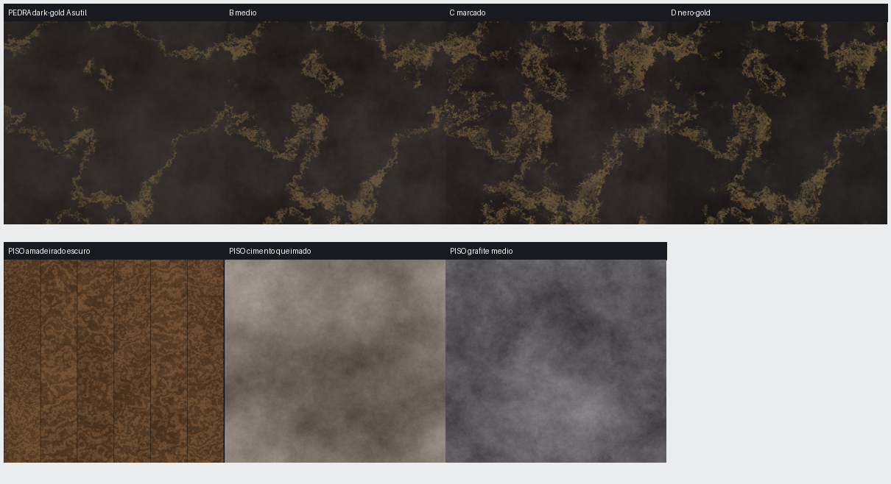

Cima: 4 pedras escuras com veio dourado (A sutil → D nero-gold). Baixo: 3 pisos (amadeirado escuro · cimento queimado · grafite médio). O COMPLETE_KITCHEN_SPEC (rodando) vai dizer qual TIPO real (porcelanato/quartzo/quartzito) + recomendação.
